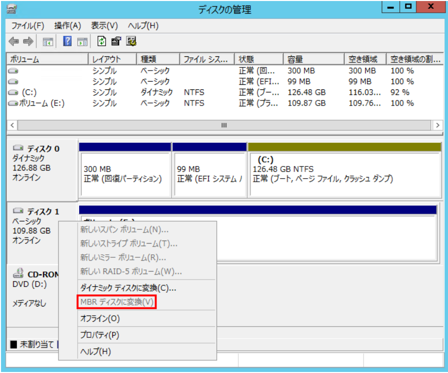

※ 本記事は弊社の Technet から移行した記事です。
こんにちは、日本マイクロソフト Windows サポートの高谷です。
突然ですが、新規ディスクを差し込んでディスクの初期化を行う際、パーティションのスタイルを選択する必要があります。皆様は普段どちらを選ばれていますでしょうか。今回は、それぞれのスタイルの特徴と、変更する方法と最近よくいただくお問い合わせと対処策についてご紹介したいと思います。
■ MBR (マスター ブート レコード) と GPT (GUID パーティション テーブル)
新しいディスクを追加した際は、まずはそのディスクを初期化する必要があります。初期化の画面で、ディスクのパーティション スタイルについて MBR か GPT のどちらかを選択しなければいけません。
MBR スタイルは、古くからある 標準 BIOS パーティション テーブルを使用します。この BIOS では、利用できるディスクのサイズが 2 TB までという制限があったため、これに変わる新しいシステムとして UEFI (Unified Extensible Firmware Interface) が考案されました。UEFIのシステムにおいて利用するパーティションが GPT スタイルです。GPT スタイルは、 2 TB 以上のサイズを扱うことができる一方で、Windows XP などの古いシステムでは利用することができません。システム要件に応じて選択をする必要があります。
■ 現在使用しているディスクのパーティション スタイルを確認する方法
現在使用しているディスクが、MBR と GPT のどちらのスタイルで初期化されていたか確認する方法は 2 つあります。
- 方法 1. [ディスクの管理] 画面から確認する -
(1) [ディスクの管理] を起動します。
(2) パーティション スタイルを確認したいディスクへカーソルを合わせて右クリックします。
…….⇒MBR ディスクの場合は、[GPT ディスクへ変換] が表示されます。
…….⇒GPT ディスクの場合は、[MBR ディスクへ変換] が表示されます。
※ 対象のディスクをボリュームとして利用している場合は、表示は見えますがグレーアウトしています。

- 方法 2. Diskpart コマンドで確認する -
(1) コマンド プロンプトを管理者権限で起動します。
(2) Diskpart コマンドで Diskpart ユーティリティーを起動します。
diskpart
(3) List disk コマンドでディスク情報を表示します。
list disk
…….⇒GPT の欄にアスタリスクが表示されているディスクは、GPT ディスクです。
…….⇒GPT の欄にアスタリスクが表示されていないディスクは、MBR ディスクです。
■ MBR ⇔ GPT のパーティション スタイル変更方法
パーティション スタイルは、ディスクの初期化の際に選択する設定です。従って、残念ながらディスクを一旦初期化しないとスタイルを変更することができません。以下に変更方法をご紹介します。
(1) ディスク初期化の前に、データを別の場所へ避難させます。
(2) [ディスクの管理] を起動します。
(3) 対象のディスク上の存在するボリュームで右クリックし、[ボリュームの削除] をクリックします。
(4) 削除の確認ダイアログで、[はい] を選択します。
…….※ ボリュームを削除すると、ボリューム内のデータはすべて削除されます。事前にデータを待避してから実行ください。
(5) ボリュームの削除が完了したら、ディスク上で右クリックし、[GPT ディスクに変換] をクリックします。
もともと GPT ディスクの場合は、[MBR ディスクへ変換] をクリックします。下の図では例として、MBR ディスクを GPT ディスクへ変換する場合を示しています。
(6) GPT へ変換した後は、再度ボリュームを作成し、待避していたデータを戻します。これで変換は完了です。
■ ディスク拡張に関してよくいただくお問い合わせ
仮想化やクラウドのサービスが普及してから、弊社では以下の質問を受けることが多くなってきました。
Q. よくいただくご質問
==========================================================================
もともと MBR スタイルでディスクを初期化して利用していたが、データが増えてきた。
パブリック クラウド上のサーバーを利用しているため、クラウドの管理コンソールから仮想ディスクの拡張を行った。
その後、ゲスト OS 側で、ボリュームを拡張しようとしたが 2 TB バイトまでしか拡張ができない。
==========================================================================
クラウド上の仮想サーバーの場合、必要に応じてリソースを追加できるという特徴があります。ディスクのサイズも後から拡張できるため、システムの構築時には少し小さめにディスクを構築し、後から必要なだけ拡張するというお客様はとても多いです。
構築時にディスクを MBR スタイルで初期化してしまっていると、後から 2 TB 以上のサイズにボリュームを拡張できない問題に直面します。
こういった状況の場合、弊社からご案内できる解決方法は 3 つあります。
-方法 1. パーティション スタイルを GPT に変更し、2 TB 以上のボリュームを作成する。-
-方法 2. ディスクをダイナミック ディスクに変換し、複数ディスクにまたがるボリュームを構成する。-
-方法 3. 記憶域スペースを使用する。-
公開情報 : 記憶域スペースの概要
URL : https://learn.microsoft.com/ja-jp/windows-server/storage/storage-spaces/overview
公開情報 : Azure Windows VM で記憶域スペースを拡張する
URL : https://jpaztech.github.io/blog/vm/extend-storage-space-on-azure-windows-vm/
※弊社では、記憶域スペースをベースとした機能拡張を継続して行っているため、新たに記憶域を構築されるお客様には記憶域スペース (方法 3) のご利用を推奨しております。
方法 1. は “MBR ⇔ GPT のパーティション スタイル変更方法” の項目にて説明しましたので、ここからは方法 2. のダイナミック ディスクに変換する方法についてご紹介いたします。
■ ダイナミック ディスクへ変換することによるボリューム サイズ拡張 (2 TB 以上) 方法
(1) 事前の準備として新規のディスクを追加して、初期化まで済ませておきます。パーティション スタイルは MBR と GPT どちらでも問題ありません。
(2) [ディスクの管理] を起動します。
(3) サイズを拡張したいボリュームが存在するディスクを右クリックし、[ダイナミック ディスクに変換] をクリックします。
(4) 確認のダイアログで [変換] をクリックし、変換します。
…….※ 変換が完了すると、ディスクの管理画面上で、対象のボリュームの帯の色が黄色になります。
(5) 対象のボリューム上で右クリックし、[ボリュームの拡張] を選択します。

(6) ボリュームの拡張ウィザードが起動します。
(7) 利用可能なディスクから、事前に追加しておいたディスクを選択し、[追加] してから、[次へ] をクリックします。
(8) [完了] をクリックし、拡張を行います。拡張の確認では、[はい] を選択します。
…….※ 新規追加したディスクも自動的にダイナミック ディスクへ変換されます。
(9) 2 本のディスクにまたがってボリュームが構成されます。ディスクの管理画面では、帯の色が紫に変わります。これで完成です。

いかがでしたでしょうか。
本ブログが少しでも皆様のお役に立てますと幸いです。